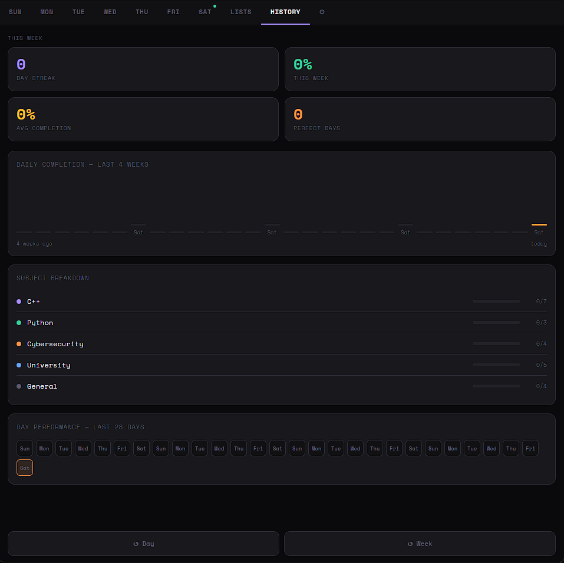

Web application · PWA
Chronosync
An offline-first habit and roadmap tracker designed for custom subjects, tasks, progress history, and local data ownership.

Current scope
Chronosync stores planning data in the browser, supports JSON import/export, and includes responsive views for tasks, lists, settings, and progress.
The project is being prepared for a cleaner modular structure and public deployment.